Schach spielen in Aschheim, Feldkirchen & Kirchheim
Jeden Freitag im Gymnasium Kirchheim – Jugend 18 bis 19:30 Uhr, Erwachsene ab 19:30 Uhr. Einsteiger und Gäste willkommen.
Neu hier? So kommst du vorbei →Berichte
Alle Berichte →
Testbericht: Partie zum NachspielenAb sofort können Berichte auch Schachpartien enthalten, die man direkt auf der Website nachspielen kann.
Bericht lesen →
Ronny die MaskeAch Ronny
Bericht lesen →
Beispiel: Mannschaftskampf mit 8 PartienSo sieht ein Mannschaftskampf mit allen Partien aus: oben die Paarungen mit Ergebnissen, darunter ein Brett. Ein Klick auf eine Zeile zeigt die Partie, unser Spieler steht immer unten.
Bericht lesen →
 Duke Blitz - Runde 2
Duke Blitz - Runde 2
 OIS 2026 - Dominik gewinnt C-Turnier!
Blitzjahreswertung 2026 (Zwischenstand)Nach drei von fünf Turnieren ist Vorjahressieger Fabian Müller mit zwei Punkten in Führung vor Pierre Tassell.
Bericht lesen →
OIS 2026 - Dominik gewinnt C-Turnier!
Blitzjahreswertung 2026 (Zwischenstand)Nach drei von fünf Turnieren ist Vorjahressieger Fabian Müller mit zwei Punkten in Führung vor Pierre Tassell.
Bericht lesen →
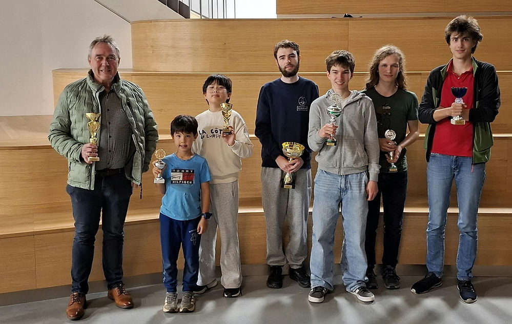
Schnellschach-Vereinsmeisterschaft 2026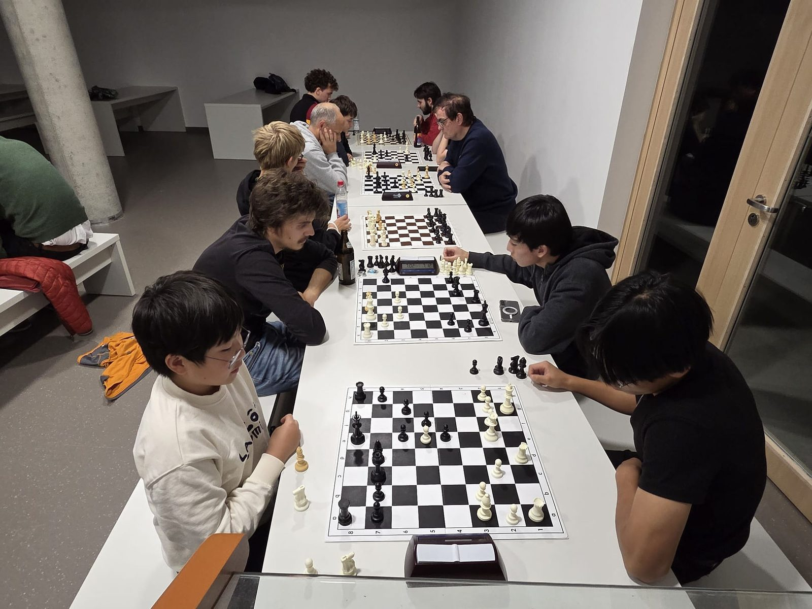
Kooperationsturnier GyKi feat. SG AFK 2026 Herbstblitz 2026Das Herbstblitz war mit 25 Teilnehmern gut besucht! Wir spielten (leicht) wahnsinnige 13 Runden Blitz bei 3 min Bedenkzeit. Bericht lesen →
Duke Blitz - Runde 2
OIS 2026 - Dominik gewinnt C-Turnier!
Blitzjahreswertung 2026 (Zwischenstand)Nach drei von fünf Turnieren ist Vorjahressieger Fabian Müller mit zwei Punkten in Führung vor Pierre Tassell.
Bericht lesen →

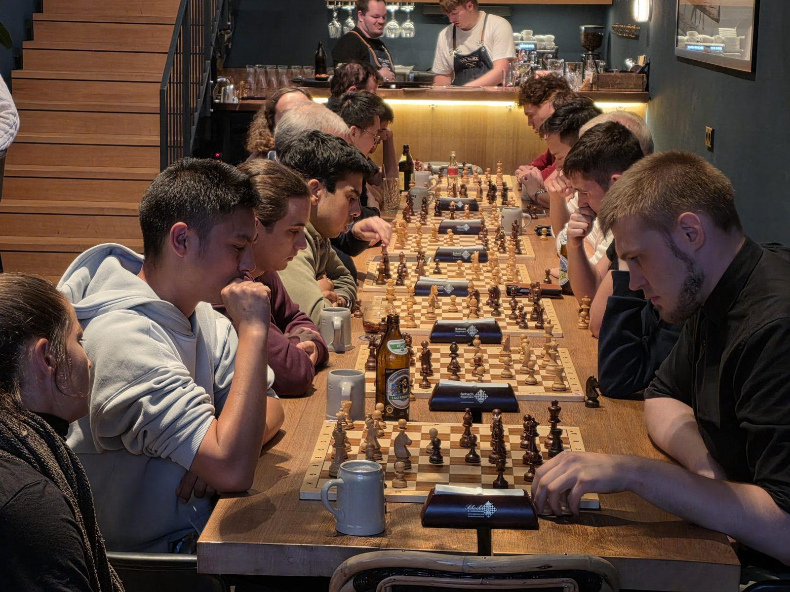
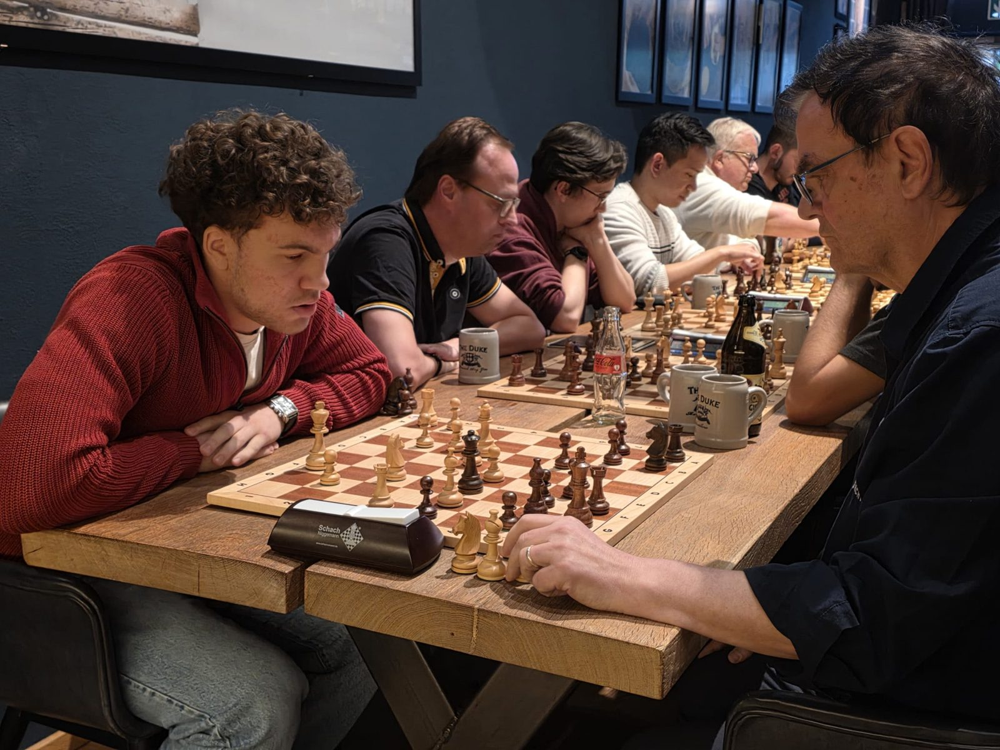


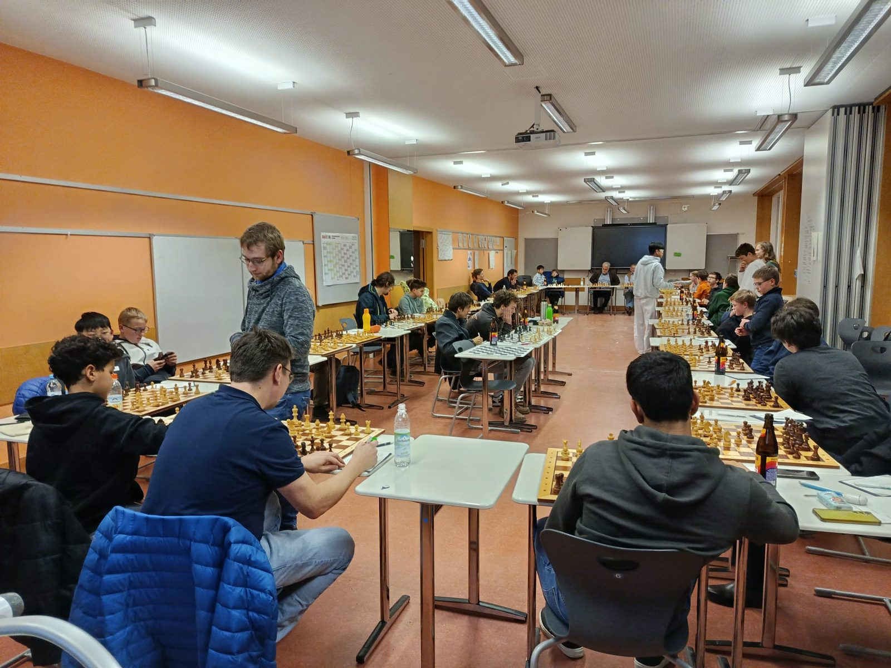

Mannschaften · zuletzt gespielt
5 Siege und 4 Niederlagen
| AFK 1 | vs. SC Roter Turm München 1 | R2 | 6 : 2 |
| AFK 2 | bei TSV Solln 1 | R2 | 3,5 : 4,5 |
| AFK 3 | bei SV Höhenkirchen 1 | R2 | 1 : 6 |
| AFK 4 | vs. SC Haar 1931 4 | R2 | 3,5 : 2,5 |
| AFK 5 | vs. SF Deisenhofen 3 | R2 | 2 : 4 |
| AFK 6 | bei 1. SK Neuperlach 3 | R1 | 1 : 3 |
| Senioren | bei Schachfreunde München 1 | R1 | 2,5 : 1,5 |
| U20 I | vs. FC Bayern München | R1 | 3 : 1 |
| U20 II | vs. SV Höhenkirchen 1 | R1 | 2,5 : 1,5 |
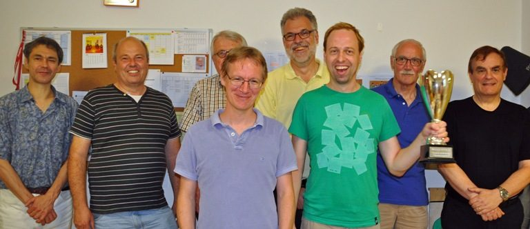


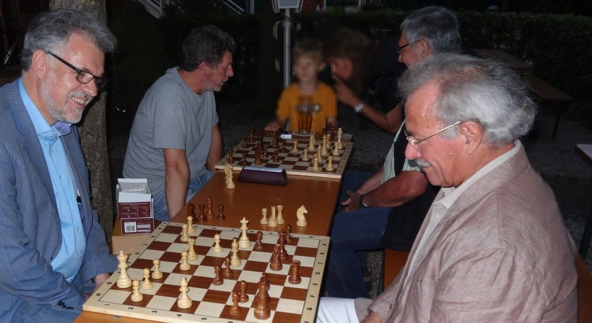
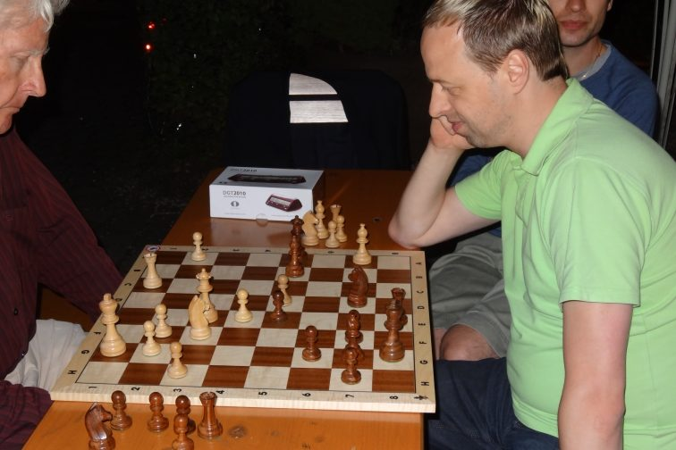
Geschichte
Seit 1952 am Brett
Aus den Schachfreunden Feldkirchen von 1952 ist eine Schachgemeinschaft für drei Gemeinden geworden – mit Mannschaften von der Jugend bis zur Bezirksliga. Chronik, Meilensteine und welche Mannschaft wann in welcher Liga spielte.
1952gegründet
9Mannschaften heute
104Mitglieder


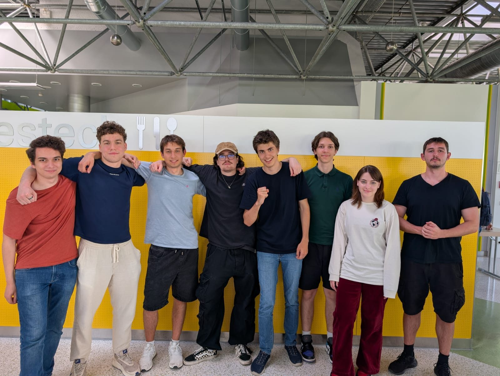
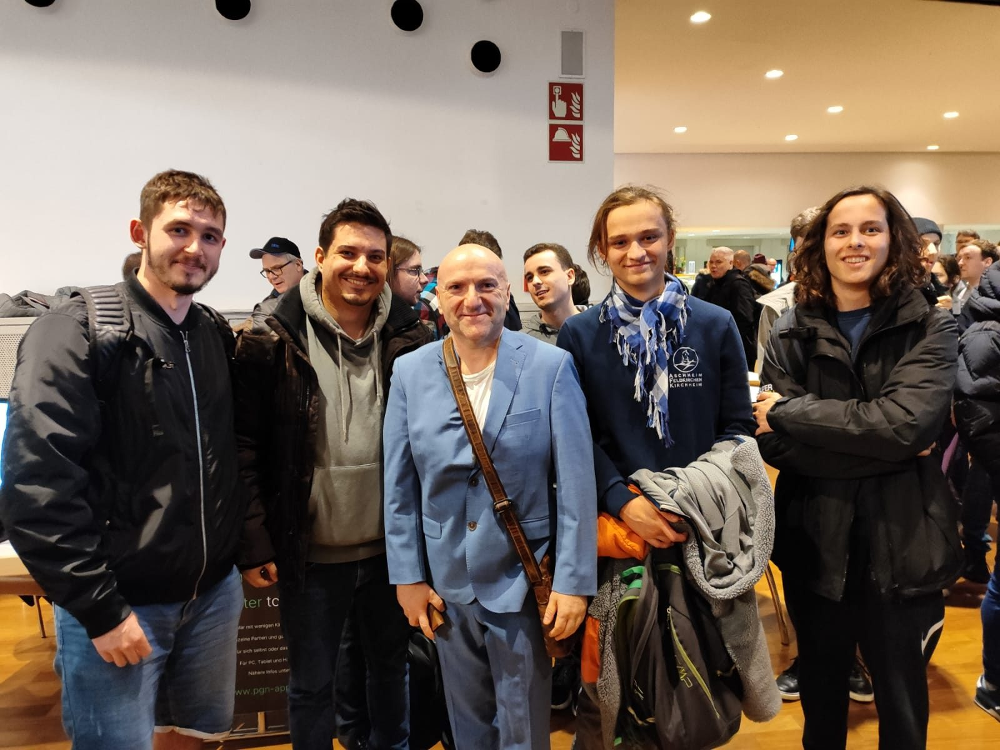
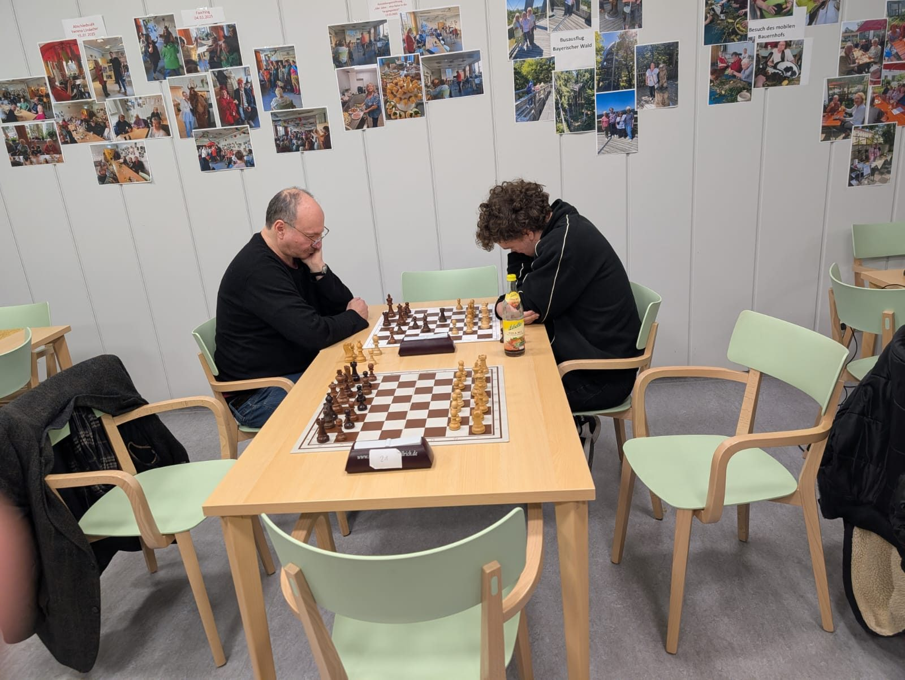
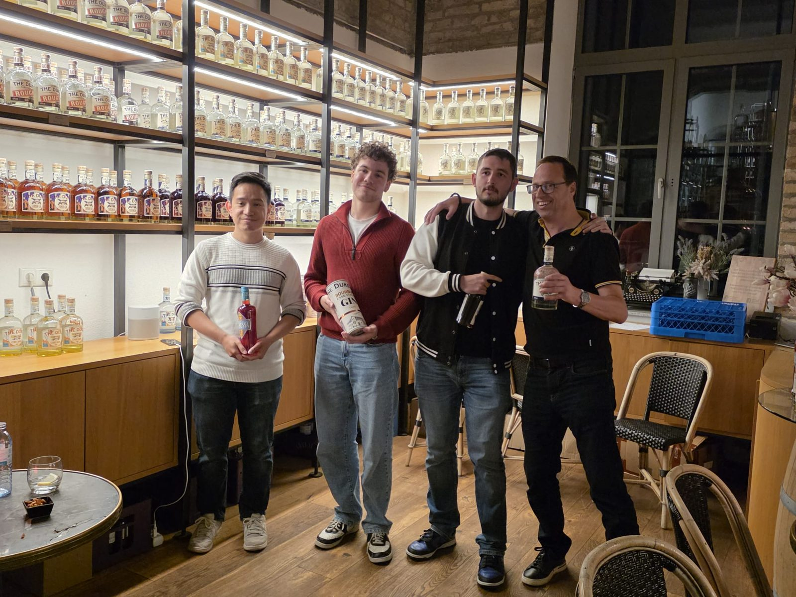
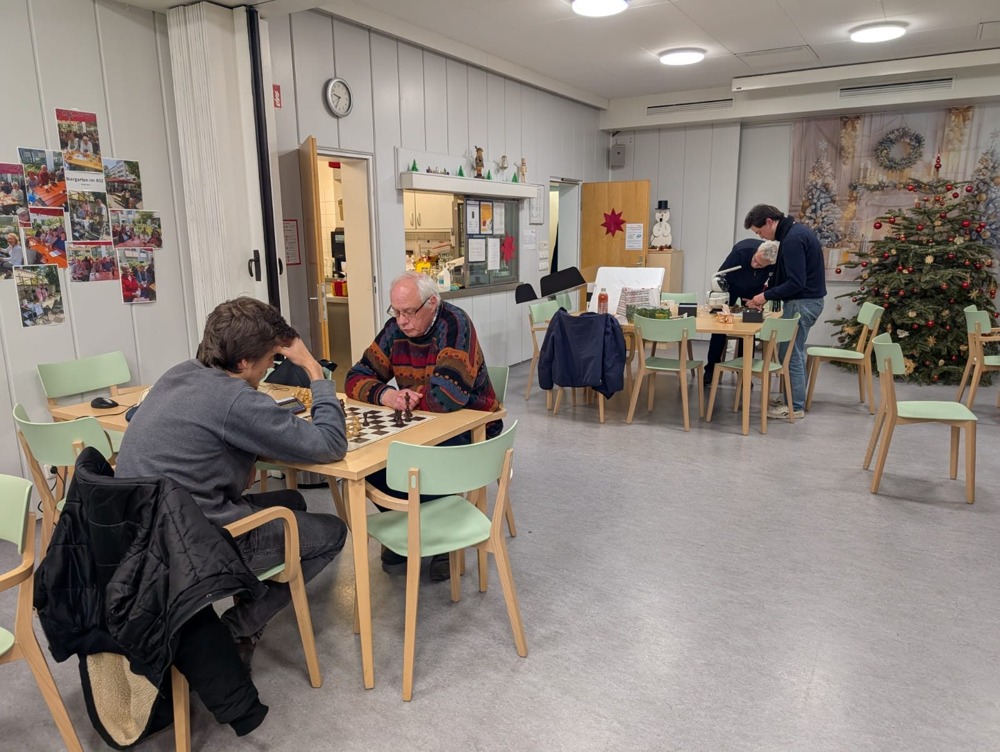
Über uns · Neu hier?
Komm einfach vorbei
Komm einfach an einem Freitag vorbei – ohne Anmeldung, Schnuppern ist kostenlos. Ob Einsteiger, Hobbyspieler oder Turnierspieler, ob jung oder alt: Bei uns findet jeder Gegner.
- Wann? Jeden Freitag ab 18 Uhr – Jugend bis 19:30, Erwachsene ab 19:30 Uhr
- Wo? Gymnasium Kirchheim, Heimstettner Str. 20, 85551 Kirchheim
Über uns & Neu hier → Mitgliedsantrag (PDF)